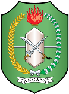
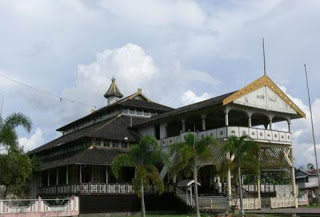
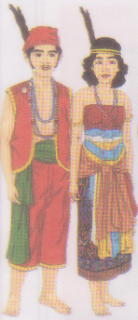
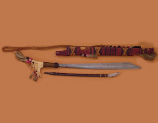

KALIMANTAN BARAT
 Kalimantan Barat
Kalimantan Barat adalah sebuah provinsi di Indonesia yang terletak di Pulau Kalimantan dengan ibu kota Provinsi Kota Pontianak.Luas wilayah Provinsi Kalimantan Barat adalah 146.807 km² (7,53% luas Indonesia). Merupakan provinsi terluas keempat setelah Papua, Kalimantan Timur dan Kalimantan Tengah. Daerah Kalimantan Barat termasuk salah satu daerah yang dapat dijuluki provinsi "Seribu Sungai".
Rumah Adat

Salah satu contoh rumah adat Kalimantan Barat dinamakan Istana Kesultanan Pontianak. Istana Kesultanan Pontianak berbentuk panggung. Bagian kolongnya tidak dipergunakan, karena tanahnya berawa-rawa.
Pada kiri-kanan istana terdapat kamar-kamar dan ditengahnya terdapat singgasana, tempat Sultan mengadakan upacara dan pertemuan. Istana tersebut terbuat dari kayu besi seluruhnya dan atapnya terbuat dari sirap kayu besi pula.
Pakaian Adat

Pria Kalimantan Barat memakai pakaian adat berupa tutup kepala berhiaskan bulu burung enggang, baju tanpa lengan (rompi), celana panjang sebatas lutut dan kain yang berfungsi sebagai ikat pinggang.
Perhiasan yang dipakainya berupa kalung manik-manik. Wanitanya memakai kain yang menutup bagian dada, juga lapisan kain-kain yang berfungsi sebagai setagen dan kain yang ditenun. Perhiasan yang dipakainya berupa bulu enggang sebagai perhiasan kepala, kalung manik-manik dan gelang di lengan. Pakaian adat ini berasal dari suku Dayak.
Senjata Tradisional

Mandau
Mandau adalah senjata tradisional yang biasa dipakai oleh penduduk di Kalimantan Barat. MAndau adalah sejenis parang dan ada pula mandau yang dipakai untuk keperluan sehari-hari.
Senjata lainnya adalah perisai, sumpitan, tombak, dan sabit. Mandau untuk keperluan berperang, dihiasi dengan rambut manusia sebagai lambang keberanian.
Perisainya yang disebut kelikit berukuran setinggi badan dengan diberi hiasan ukir-ukiran berwarna hitam dan merah. Senjata lainnya adalah sumpitan dengan anak sumpit (damak) yang ujungnya diberi racun getah pohon yang disebut ipoh.
Alat Musik
.png)
Kolatung
.png)
Sapek
.png)
Balikan
.png)
Kangkuang
Tarian Daerah
.png)
Tari Manang
.png)
Tari Zapin
.png)
Tari Mandau
.png)
Tari Jonggan
.png)
Tari Kondan
Suku dan Bahasa
Suku : Suku dan marga yang terdapat didaerah kalimantan Barat adalah : Dayak (Ngaju, Apa Kayan, Kalimantan, Murut, Punan, Ot Danun, dan lain-lain).Bahasa Daerah : Dayak, Kayan, Ot Danun dan lain-lain.
Wisata
{kind=link}
Taman Bukit Bougenville
Taman Bukit Bougenville ini merupakan sebuah tempat wisata berupa taman bunga. Taman Bukit Bougenville ini berada di desa Sikanjung.Dengan luas sekitar 1,5 ha taman ini berisikan berbagai macam bunga dengan aneka warna yang indah.
NB: Hanya 10 menit dari pusat kota Singkawang
{kind=link}
Pantai Kijing
Pantai Kijing terletak di Mempawah Kabupaten Pontianak, Kalimantan Barat. Pantai yang sangat indah dihiasi bukit serta pepohonan yang sejuk. Ada bukit yang menghadap ke pantai dan pepohonan kelapa yang berjajar rapi, ada juga lapangan gastrek menjadi unggulan berbanding pantai lainnya.
NB: Hanya 25 menit dari pusat kota Mempawah
{kind=link}
Pantai Kura kura
Pantai Kura-Kura terletak di Kabupaten Bengkayang. Pemandangan ke arah laut natuna yang luas dan terlihat jelas beberapa pulau. Seperti pulau Kabung dan Penata. Ketika malam hari, suasana gelap akan menyelimuti karena di pantai ini belum tersedia listrik. Hanya mengandalkan sinar bulan dan cahaya bintang dilangit.
NB : Dari pusat kota Singkawang kita perlu ke barat sekitar 30 menit, baru sampai di lokasi
 Lihat Peta
Lihat Peta
Pantai Tanjung Batu Pemangkat
Pantai Tanjung Batu Pemangkat adalah pantai yang memiliki bebatuan yang menjorok ke laut. Bisa dikatakan sebagai pantai tak perpasir, karena di dominasi oleh batu. Pantai dilengkapi fasilitas bermain dan juga terdapat mercusuar yang menjulang tinggi. Pohon bakau juga ikut menghiasi keindahan pantai ini. biaya masuk ialah 5000/kepala.
NB : Tidak jauh dari pusat kota Pemangkat hanya sekitar 7 menit.
{kind=link}
Pantai Selimpai
Pantai Selimpai terletak di Desa Sebubus, Kecamatan Paloh, Kabupaten Sambas, Provinsi kalimantan Barat, Indonesia. Pantai Selimpai merupakan pantai yang memiliki luas 200 ha, dengan bentuk pulau memanjang, dengan pasir yang putih dan landai berserta pohon pinus yang berjejeran rapi serta tinggi menjulang. Yang paling menjadi daya tarik daripada objek wisata pantai selimpai ini adalah pantai ini menjadi tempat persinggahan penyu, yang antara lain adalah penyu hijau, penyu sisik, penyu lekang.
NB : Sekitar 15 menit dari pusat kota Paloh.